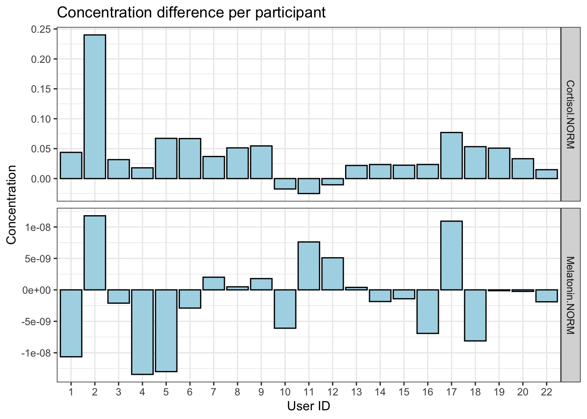

Chapter 3 Data transformation
As mentioned in the introduction, for each sample or “user” many variables were sampled over the course of two days. These measurements are organized into 7 different file or categories like sleep, activity, actigraph, saliva samples etc. In this section we will focus on transforming each of the files that we used to perform any kind of analysis.
In conclusion, we worked on all the datetime columns and transformed them into the format YYYY-MM-DD HH:MM:SS due to analysis convenience. We decided to not include RR.csv in our discussion, since the heartbeat information is also included in the actigraph.csv. We considered it redundant and were more interested in relating heartbeat data to activities.
3.1 Sleep
The sleep file includes measurements ranging from the time the user gets into bed to the time that he gets out of bed. The measurements can be broadly grouped into two categories - one that actually relates to the quality of sleep, for example, sleep fragmentation index and the average awakening length, and other category includes time measurements, for example, the time it took for the user to fall asleep and the time he was in bed after waking up. Variables that fall in the second category have a lot of information but can be combined together to transform time measurements to duration. “Durations” can be easily compared across users in a succinct manner. However, there are some variables, like in-bed and out-bed time, that we used as is because transforming them would actually lead to a loss in information.
There was only one user without any sleep records. Since the aim of our project is to define a metric for sleep quality and identify variables with direct or indirect effects, user 11 was excluded from all the analysis we performed. Having calculated the sleep quality for 21 users, it would be easy to treat user 11 as a missing value and apply different algorithms for imputing the value. However, this comes with a caveat - because the users are in themselves continuous categories and probably have their own distribution, looking at the entire sample space would mean that underlying distribution is multivariate. So, to effectively impute the value, we first need to estimate the distribution parameters (even if assume that the distribution of each user is normal). This is beyond the scope of this project but we do plan to try it out if time permits.
We also discovered a pattern that every user once in bed (to sleep) doesn’t get out of bed till morning except one. Sleep records of user 1 showed that he got out of bed at 3:31 AM and went back to sleep at 3:57 AM. It is hard to tell what activities did he engage in after getting out of bed briefly as the activities file (described below) does not have time stamps. For simplification of our analysis, we treated the time interval that the user was out of bed as an “awakening” i.e. when a user awaken from his sleep and remains awake for some time. This required updating the rest of the variables such as “Average Awakening Length”,“Sleep Fragmentation Index” etc. Depending on the definition of the variables, we either took the average or maximum or summed the two quantities corresponding to each of the “sleep sessions”. For example, “Total Sleep Time” was now the sum of the sleep time in both sessions, while “Sleep Fragmentation Index” was averaged across sessions.
We will define variables wherever needed but the reader is encouraged to go through the documentation of the dataset (link in chapter 2), to understand the variables in depth.
3.2 Actigraph
Actigraph.csv contained accelerometer and inclinometer data recorded throughout the day. Overall, it tracked users’ movement data, such as steps, direction, acceleration, positions, etc.
3.2.1 Definition and explanation of each column
- Axis1: Raw Acceleration data of the X-axis expressed in Newton-meter.
- Axis2: Raw Acceleration data of the Y-axis expressed in Newton-meter.
- Axis3: Raw Acceleration data of the Z-axis expressed in Newton-meter.
- Steps: number of steps per second.
- HR: beats per minutes (bpm).
- Inclinometer Off: values equal to 1 refer to no activation of the inclinometer. The values are reported per second.
- Inclinometer Standing: values equal to 1 refer to the standing position of the user, while 0 refers to other user positions. Values are reported per second.
- Inclinometer Sitting: values equal to 1 refer to the sitting position of the user, while 0 refers to other user positions. Values are reported per second.
- Inclinometer Lying: values equal to 1 refer to the lying position of the user, while 0 refers to other user positions. Values are reported per second.
- Vector Magnitude: vector movement derived from raw acceleration data expressed in Newton-meter.
- day: 1 and 2 refer to the first and second day of data recording, respectively.
- time: day time when the heartbeat happened (hours:minutes:seconds)
3.2.2 Transformation process:
Datetime format: We transform the
timecolumn into datetime type in R. Also, since initialtimecolumn doesn’t contain date information, we add days according to thedaycolumn to create a relative time stamp for each record in order to facilitate future calculation.Create category
Position: Here we gathered columns with inclinometer information, which wereInclinometer.Off,Inclinometer.Standing,Inclinometer.Sitting,Inclinometer.Lying, transformed them into categorical columnPosition. By doing so, we can explore data correlations under groups of position throughout the day.
3.3 Activity
3.3.1 Definition and explanation of each column
‘Start’ and ‘end’ columns refer to the time of the day (hours:minutes) when the event happened, while ‘day’ columns refers to the day when it happened (1 and 2 refer to the first and second day of data recording, respectively).
3.3.2 Transformation process:
Datetime format: Here we substitute “00:00” to “24:00” in column
Endto avoid calculating between wrong dates, and then transformed into the format as we did forActigraph.csv.Relabel the activities: The document labeled the activity categories from 1 to 12. However, an extra category, labeled as
0, also included in the dataset. In this project, we will assume that the0represented undetermined activities. Here, we also had to deal with several minor mistakes in the dataset manually.
- 13 Categories of activity:
- undefined: all other unlabeled activity will count here.
- sleeping
- laying down
- sitting: e.g. studying and driving
- light mvmnt: e.g. slow/medium walk, chores and work.
- medium: e.g. fast walk and bike
- heavy: e.g. gym, running.
- eating
- small scr.usg: e.g. smartphone and computer.
- large scr.usg: e.g. TV and cinema.
- caff. consump.: caffeinated drink consumption, e.g. coffee or coke.
- smoking
- alc. consump.: alcohol assumption.
Calculate duration for each activity: To figure the total time each user spent on each activity, we calculate time intervals (
End-Start) between different activities in seconds.Plotting: We explored the dataset using
geom_tilein ggplot2 package. From the plot below, we noticed that user 21 was laying down for quite a long time.

3.4 Saliva
Saliva.csv collected Melatonin and Cortisol concentrations in the saliva for each participants before going to bed and after waking up. However, no data was provided for User_21 due to problem in the salivary samples that do not permit to analyse it.
3.4.1 Definition and explanation of each column
- Sample: Two samples per participant are included, one before sleep and one after waking up.
- Melatonin levels are reported in μg of melatonin per μg of protein.
- Cortisol levels are in μg of cortisol per 100 μg of protein.
3.4.2 Transformation process
We calculated the difference in chemical concentration between sample collected before sleep and after waking up per each participant.

3.5 User info
missing age for user_18. Otherwise, nothing need to be transformed or cleaned in this dataset. All male participants.
3.5.1 Definition and explanation of each column
user_info.csv - anthropocentric characteristics of the participant:
- gender: M and F refer to Male and Female, respectively.
- height is expressed in centimetre (cm).
- weight is expressed in kilograms (kg).
- age is expressed in years.